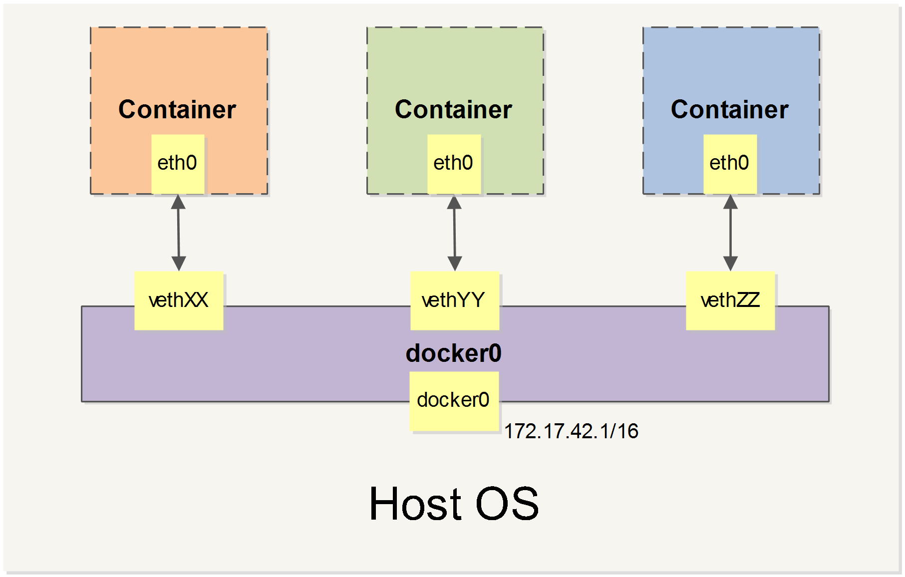

docker介绍
目录
Docker 分为 CE 和 EE 两大版本。CE 即社区版（免费，支持周期 7 个月），EE 即企业版，强调安全，付费使用，支持周期 24 个月。
Docker CE 分为 stable test 和 nightly 三个更新频道。每六个月发布一个 stable 版本 (18.09, 19.03, 19.09…)。
基本概念
虚悬镜像
在镜像列表中，还可以看到一个特殊的镜像，这个镜像既没有仓库名，也没有标签，均为
这个镜像原本是有镜像名和标签的，但随着官方镜像维护，发布了新版本后，重新 docker pull
# 显示虚悬镜像 $ docker image ls -f dangling=true # 一般来说，虚悬镜像已经失去了存在的价值，是可以随意删除的 $ docker image prune
中间层镜像
为了加速镜像构建、重复利用资源，Docker 会利用 中间层镜像。所以在使用一段时间后，可能会看到一些依赖的中间层镜像。
docker image ls 默认只会显示顶层镜像
docker image ls -a 可以显示包括中间层在内的所有镜像
这样会看到很多无标签的镜像，与之前的虚悬镜像不同，这些无标签的镜像很多都是中间层镜像，是其它镜像所依赖的镜像。这些无标签镜像不应该删除，否则会导致上层镜像因为依赖丢失而出错。只要删除那些依赖它们的镜像后，这些依赖的中间层镜像也会被连带删除。
容器与镜像
镜像(image)是一种静态的结构，可以看成面向对象里面的类，而容器(container)是镜像的一个实例。
镜像(image)包含着容器(container)运行时所需要的代码以及其它组件，它是一种分层结构，每一层都是只读的（read-only layers）。构建镜像时，会一层一层构建，前一层是后一层的基础。镜像的这种分层存储结构很适合镜像的复用以及定制。
构建容器(container)时，通过在镜像(image)的基础上添加一个可写层（writable layer），用来保存着容器运行过程中的修改。

图1 docker-layer
容器与虚拟机
比如，一台主机安装的是 Centos 操作系统，现在在上面跑一个 Ubuntu 容器。此时，Host OS 是 Centos，Guest OS 是 Ubuntu。Guest OS 也被成为容器的 Base Image。
需要注重理解 image 和 OS 这两个概念。之所以成为 base image，而不是 base OS，是因为 base image 中并不包括完整的 OS。而这一点，是容器与虚拟机之前的本质区别之一。那就是，容器并没有虚拟化，而是共享主机上的 linux 内核。
使用容器需要避免的一些做法
- 不要在容器中保存数据（Don't store data in containers）
- 将应用打包到镜像再部署而不是更新到已有容器（Don't ship your application in two pieces）
- 不要产生过大的镜像 （Don't create large images）
- 不要使用单层镜像 （Don't use a single layer image）
- 不要从运行着的容器上产生镜像 （Don't create images from running containers ）
- 不要只是使用 “latest”标签 （Don't use only the “latest” tag）
- 不要在容器内运行超过一个的进程 （Don't run more than one process in a single container ）
- 不要在容器内保存 credentials，而是要从外面通过环境变量传入 （ Don't store credentials in the image. Use environment variables）
- 不要使用 root 用户跑容器进程（Don't run processes as a root user ）
- 不要依赖于 IP 地址，而是要从外面通过环境变量传入 （Don't rely on IP addresses ）
镜像的内容
- docker 镜像中主要就是 tar 文件包和元数据 json 文件
- docker 镜像的打包过程，其实就是将每一层对应的文件打包过程，最后组成一个单一的 tar 文件
- docker 镜像的使用过程，其实就是将一层层的 tar 文件接包到文件系统的过程。
Doker 平台的基本构成
Docker 平台基本上由三部分组成： * 客户端：用户使用 Docker 提供的工具（CLI 以及 API 等）来构建，上传镜像并发布命令来创建和启动容器
Docker 主机：从 Docker registry 上下载镜像并启动容器 * Docker
registry：Docker 镜像仓库，用于保存镜像，并提供镜像上传和下载
docker 仓库
仓库（Repository）是集中存放镜像的地方。
一个容易混淆的概念是注册服务器（Registry）。实际上注册服务器是管理仓库的具体服务器，每个服务器上可以有多个仓库，而每个仓库下面有多个镜像。 从这方面来说，仓库可以被认为是一个具体的项目或目录。例如对于仓库地址 docker.io/ubuntu 来说，docker.io 是注册服务器地址，ubuntu 是仓库名。
大部分时候，并不需要严格区分这两者的概念。
通过 docker search 命令来查找官方仓库中的镜像，并利用 docker pull 命令来将它下载到本地。
在查找的时候通过 --filter=stars=N 参数可以指定仅显示收藏数量为 N 以上的镜像。
docker 数据管理
在容器中管理数据主要有两种方式：
- 数据卷（Volumes）
- 挂载主机目录 (Bind mounts)

图2 types-of-mounts
数据卷
数据卷 是一个可供一个或多个容器使用的特殊目录，它绕过 UFS，可以提供很多有用的特性：
- 数据卷 可以在容器之间共享和重用
- 对 数据卷 的修改会立马生效
- 对 数据卷 的更新，不会影响镜像
- 数据卷 默认会一直存在，即使容器被删除
注意：数据卷 的使用，类似于 Linux 下对目录或文件进行 mount，镜像中的被指定为挂载点的目录中的文件会隐藏掉，能显示看的是挂载的数据卷。
创建一个数据卷
$ docker volume create my-vol
启动一个挂载数据卷的容器
在用 docker run 命令的时候，使用 –mount 标记来将 数据卷 挂载到容器里。 在一次 docker run 中可以挂载多个 数据卷。
$ docker run -d -P \ --name <name> \ # -v my-vol:/wepapp \ --mount source=my-vol,target=</path/to/target> \ <username>/<appname> \ <cmd> <args>
其他
# 查看数据卷的具体信息 $ docker inspect web # 删除数据卷 $ docker volume rm my-vol # 清除无主数据卷 $ docker volume prune # 删除容器的时候同时删除数据卷 # dokcer rm -v <name>
挂载主机目录
挂载一个主机目录作为数据卷
使用 --mount type=bind 标记可以指定挂载一个本地主机的目录到容器中去。
Docker 挂载主机目录的默认权限是 读写，用户也可以通过增加 readonly 指定为 只读。
$ docker run -d -P \ --name <name> \ --mount type=bind,source=</path/to/source>,target=</path/to/target>,readonly \ <username>/<appname> \ <cmd> <args>
挂载一个本地主机文件作为数据卷
--mount 标记也可以从主机挂载单个文件到容器中
$ docker run --rm -it \ --mount type=bind,source=$HOME/.bash_history,target=/root/.bash_history \ ubuntu:18.04 \ bash
使用网络
外部访问容器
容器中可以运行一些网络应用，要让外部也可以访问这些应用，可以通过 -P 或 -p 参数来指定端口映射。
当使用 -P 标记时，Docker 会随机映射一个 49000~49900 的端口到内部容器开放的网络端口。
-p 则可以指定要映射的端口，并且，在一个指定端口上只可以绑定一个容器。
# -p支持的格式： ip:hostPort:containerPort | ip::containerPort | hostPort:containerPort # 映射所有地址的端口 hostPort:containerPort # 映射到指定地址的指定端口 ip:hostPort:containerPort # 映射到指定地址的任意端口 ip::containerPort
查看映射端口配置
使用 docker port 来查看当前映射的端口配置，也可以查看到绑定的地址
注意：
- 容器有自己的内部网络和 ip 地址（使用 docker inspect 可以获取所有的变量，Docker 还可以有一个可变的网络配置。）
- -p 标记可以多次使用来绑定多个端口
容器互联
新建网络
先创建一个新的 Docker 网络。
$ docker network create -d bridge my-net
-d 参数指定 Docker 网络类型，有 bridge =overlay=。
连接容器
运行一个容器并连接到新建的 my-net 网络
$ docker run -it --rm --name busybox1 --network my-net busybox sh
打开新的终端，再运行一个容器并加入到 my-net 网络
$ docker run -it --rm --name busybox2 --network my-net busybox sh
这时 busybox1 和 busybox2 就实现了容器互联。 可以在 busybox[1/2] 中 ping busybox[1/2] 测试互联是否成功。
配置 DNS
如何自定义配置容器的主机名和 DNS 呢？秘诀就是 Docker 利用虚拟文件来挂载容器的 3 个相关主机名和 DNS 的配置文件。
这种机制可以让宿主主机 DNS 信息发生更新后，所有 Docker 容器的 DNS 配置通过宿主机的 /etc/resolv.conf 文件立刻得到更新。
配置全部容器的 DNS ，也可以在 /etc/docker/daemon.json 文件中增加以下内容来设置。
{
"dns" : [
"114.114.114.114",
"8.8.8.8"
]
}
如果用户想要手动指定容器的配置，可以在使用 docker run 命令启动容器时加入如下参数：
-h HOSTNAME 或者 --hostname=HOSTNAME 设定容器的主机名，它会被写到容器内的 /etc/hostname 和 /etc/hosts 。 但它在容器外部看不到，既不会在 docker container ls 中显示，也不会在其他的容器的 /etc/hosts 看到。
--dns=IP_ADDRESS 添加 DNS 服务器到容器的 /etc/resolv.conf 中，让容器用这个服务器来解析所有不在 =/etc/hosts 中=的主机名。
--dns-search=DOMAIN 设定容器的搜索域，当设定搜索域为 .example.com 时，在搜索一个名为 host 的主机时，DNS 不仅搜索 host，还会搜索 host.example.com 。
注意：如果在容器启动时没有指定最后两个参数，Docker 会默认用主机上的 /etc/resolv.conf 来配置容器。
高级网络配置
当 Docker 启动时，会自动在主机上创建一个 docker0 虚拟网桥，实际上是 Linux 的一个 bridge，可以理解为一个软件交换机。它会在挂载到它的网口之间进行转发。
同时，Docker 随机分配一个本地未占用的私有网段（在 RFC1918 中定义）中的一个地址给 docker0 接口。 比如典型的 172.17.42.1，掩码为 255.255.0.0。此后启动的容器内的网口也会自动分配一个同一网段（172.17.0.0/16）的地址。
当创建一个 Docker 容器的时候，同时会创建了一对 veth pair 接口（当数据包发送到一个接口时，另外一个接口也可以收到相同的数据包）。 这对接口一端在容器内，即 eth0；另一端在本地并被挂载到 docker0 网桥，名称以 veth 开头（例如 vethAQI2QT）。 通过这种方式，主机可以跟容器通信，容器之间也可以相互通信。Docker 就创建了在主机和所有容器之间一个虚拟共享网络。

图3 network